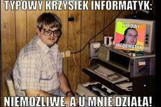

Fabian B 2G
zadanie 1
Żart o informatku
Żart o informatku

Na bal maskowy w firmie przyszli:
- szef w masce goryla
- kadrowa w masce lwa
- sekretarka w masce konia
- informatyk w masce 255.255.255.0
Żart o Lekarzu
Żart o tasiemcu
Pacjent radzi się lekarza co zrobić, aby pozbyć się tasiemca.
- Proszę przez tydzień jeść ciastka i popijać je mlekiem.
Po tygodniu pacjent wraca.
- Panie doktorze, nie pomogło.
- Niech pan pije samo mleko!
Chory zrobił, jak mu radził lekarz, a tu na drugi dzień tasiemiec wychodzi i pyta:
- A ciacho gdzie?!
Żart o Babie
Żart o babie
Kto się tam drze za ścianą?
- Sąsiadka. Odreagowuje pracę.
- To gdzie ona pracuje?
- W bibliotece.